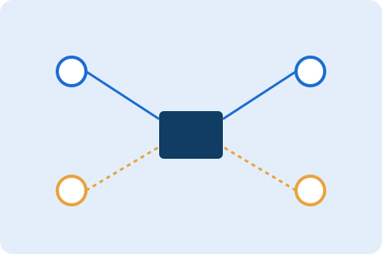

Almost every office in Abu Dhabi asks some version of "do we really need structured cabling, or can WiFi handle everything?" The honest answer is that the best networks use both, deliberately, rather than choosing one over the other.
Quick answer: what each is actually for
WiFi is for
Laptops, phones, tablets and guest devices that move around the office.
Cabling is for
Desktops, VoIP phones, printers, cameras, access control and the WiFi access points themselves.
What WiFi is actually good at
WiFi is excellent for laptops, phones and tablets that move around the office, and for guest access you don't want wired into your internal network. It is not designed to be the backbone carrying every device's traffic back to a single point, especially in offices with concrete walls and multiple floors common across Abu Dhabi buildings.
What structured cabling is actually good at
Desktop workstations, VoIP phones, printers, CCTV cameras, access control panels and the WiFi access points themselves all perform better on wired Cat6/6A cabling: lower latency, no interference from neighbouring networks, and no risk of one congested WiFi channel slowing down the whole office. Structured cabling is what your WiFi access points should be wired into, not a replacement for WiFi.
The setup that actually works
In practice, the offices with the fewest network complaints run structured cabling to every fixed device and to a properly placed set of access points, then let WiFi handle only what genuinely needs to be wireless. This avoids both extremes: an office crammed with visible cables everywhere, and an office trying to run everything over WiFi and wondering why video calls keep dropping.
Signs your office needs structured cabling, not just more routers
- Video calls regularly freeze or drop during busy hours, even on a fast internet plan.
- File transfers between desks are noticeably slower than expected for your internet speed.
- Adding another consumer WiFi router hasn't actually fixed dead zones, just moved them.
- CCTV cameras, access control or VoIP phones occasionally drop connection.
- The office spans multiple floors or has thick concrete walls between work areas.
What this costs versus what it saves
Structured cabling has a higher upfront cost than "just buying a few WiFi routers," but it avoids the repeated cost of troubleshooting WiFi dead zones, replacing consumer routers that weren't built for commercial load, and the productivity cost of unreliable connections during client calls. For most offices above roughly 10 desks, the cabling investment pays for itself within the first year in reduced IT firefighting alone.
Planning a new or renovated office network
If you're fitting out a new office or relocating, this is the cheapest time to install structured cabling, before walls and ceilings are finished. Retrofitting later is possible but costs more in labor for the same result. If your fit-out also includes CCTV or access control, planning all the low-voltage cabling together in one pass saves significant cost versus separate projects later — see our guides on choosing a CCTV installer and access control for offices if those are part of your fit-out too.
Get a network plan for your office
Need a network plan for your Abu Dhabi office? A free WiFi and cabling survey identifies exactly where dead zones occur and what's needed to fix them, rather than guessing with another consumer router.
Request a Free WiFi & Cabling Survey WhatsApp Us
Frequently asked questions
Yes for fixed devices. WiFi access points themselves perform best when wired into a structured cabling backbone, and fixed devices benefit from a wired connection rather than competing for WiFi bandwidth.
Often because too many fixed devices are competing on WiFi that should be wired, or access points are poorly placed relative to concrete walls.
For offices above roughly 10 desks, structured cabling typically pays for itself within the first year through reduced IT troubleshooting.
During a new fit-out or renovation, before walls and ceilings are finished.
Get our free planning checklist
Subscribe and we'll send you a short, practical checklist on this topic, plus occasional tips for Abu Dhabi property owners.
No spam. Unsubscribe anytime.
Comments & questions
Have a question about your specific property? Leave a comment and our engineers will reply, usually within one business day.
We kept buying new routers and the dead zone just moved around the office. Turns out we needed cabling to the access points, not more routers.
Very common issue — glad the survey caught it before another router purchase. Let us know if you'd like the cabling extended to the new meeting room too.